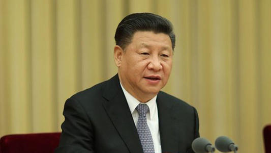

习近平主席指出：“浦东开发开放30年取得的显著成就，为中国特色社会主义制度优势提供了最鲜活的现实明证，为改革开放和社会主义现代化建设提供了最生动的实践写照！”“浦东开发开放30年的历程，走的是一条解放思想、深化改革之路，是一条面向世界、扩大开放之路，是一条打破常规、创新突破之路。”
“从阡陌农田成为现代化新城，回顾浦东30年的跨越式发展，改革开放是一个至关重要的视角。”泰国开泰银行高级副总裁蔡伟才自上世纪90年代起多次到访浦东，对浦东的发展有着直观感受。他表示，30年来，浦东改革开放走在全国前列，不仅为自身经济增长带来强劲支撑，也为中国长远发展作出重要探索和实践。“浦东取得的显著成就充分说明，在中国，改革开放只有进行时，没有完成时。”
哥伦比亚—中国友好协会主席吉列尔莫·普亚纳表示，在中国共产党坚强领导下，浦东以敢闯敢试的精神实现了跨越式发展，众多跨国企业扎根浦东长远发展，数千家高新技术企业积蓄创新活力，越来越多的各国人才来到这里创新创业。“浦东开发开放的成功实践，深刻表明改革开放是当代中国最显著的特征，充分彰显中国特色社会主义制度的显著优势。”
世界俄罗斯侨胞协调委员会主席米哈伊尔·德罗兹多夫长期在上海工作生活，在他看来，浦东取得了辉煌发展成绩，同时在发展过程中积累了许多有益经验，一系列改革创新举措为其他地方所借鉴。“它所释放的改革发展动力，为中国经济持续快速发展作出重要贡献，展现了中国的制度优势和治理智慧。”
“作为中国改革开放和现代化建设的一个缩影，浦东在开发开放实践中形成众多制度创新成果，不仅为中国持续推进改革开放提供样本，也为广大发展中国家提供了宝贵发展经验。”法国经济学家卡尔·埃谢纳表示。
俄罗斯科学院远东研究所副所长安德烈·奥斯特洛夫斯基说，浦东的发展经验值得俄罗斯城市借鉴和学习。俄罗斯丰美股份有限公司总经理阿列克谢·奥辛采夫认为，中国推动更高水平的对外开放，不仅将为中国经济增长和社会进步增添动力，而且也将为世界各国创造更多发展机遇。
湖南文化产业网版权所有 (c) All Rights Reserved.
未经湖南文化产业网书面特别授权，请勿转载或建立镜像